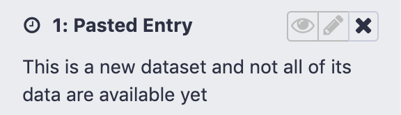

Galaxy Troubleshooting
Contributors
 Martin Čech
Martin Čech  Nate Coraor
Nate Coraor
In system administration…
Everything always goes wrong
When things go wrong, where do you begin?
–
LOGS
–
.left[Check all the logs]
- uWSGI log
- handler logs (if not all-in-one)
- Pulsar logs
- nginx error and access logs
- syslog/messages
- authlog
- browser console log
Most common problems
- Startup problems
- Web/UI problems
- Tool failures
- Job execution problems
- General performance problems
- Dependency issues
- Other stuff
Startup problems
–
Where do you begin? In the…
–
LOGS
Specifically, uWSGI and job handler logs.
Database migration
.reduce90[
Exception: Your database has version '144' but this code expects version '165'. Please
backup your database and then migrate the database schema by running 'sh manage_db.sh upgrade'.
]
Use Ansible! This is permanently solved for you.
Otherwise, upgrade as instructed.
.left[If you believe this message is in error, you can:]
- Check DB table
migrate_version, columnversion. - Check folder
lib/galaxy/model/migrate/versions/- the latest migration should match the DB. - Clean the
*.pycfiles in migrate versions folder to make sure there is no remnant from other code revisions.
class: left
Database migration
Downgrading - Perform in this order:
- Downgrade the DB with
manage_db.sh - Downgrade Galaxy with
git checkout - Clean
*.pyc
Stuck in a restart loop
[uWSGI] getting YAML configuration from /srv/galaxy/config/galaxy.yml
*** Starting uWSGI 2.0.18 (64bit) on [Wed Mar 4 16:19:27 2020] ***
... bunch of stuff ...
[uWSGI] getting YAML configuration from /srv/galaxy/config/galaxy.yml
*** Starting uWSGI 2.0.18 (64bit) on [Wed Mar 4 16:19:27 2020] ***
... bunch of stuff ...
[uWSGI] getting YAML configuration from /srv/galaxy/config/galaxy.yml
*** Starting uWSGI 2.0.18 (64bit) on [Wed Mar 4 16:19:27 2020] ***
...
- Open the log without following
- Scroll to the end
- Search/scroll back to the last startup attempt
- The lines directly preceding should offer some insight
Stuck in a restart loop
The reason that Galaxy is dying might not be in the log. If it’s not, then
If using systemd then it should be in journalctl -u galaxy
If using something else, it’s wherever stderr is being redirected to (supervisor?)
Or maybe the system is killing it… (/var/log/{messages,syslog})
Web/UI Problems
–
Where do you begin? In the…
–
LOGS
Specifically: uWSGI, nginx, and browser console logs
502 Bad Gateway
Your reverse proxy has failed to connect to the Galaxy socket
- Check that Galaxy is running / not in a reboot loop
- Check that your proxy and Galaxy/uWSGI socket options match
- Check proxy server logs (e.g.
/var/log/nginx) - Check uWSGI logs for
bind(): Address already in use [core/socket.c line 769] - Check that something is listening on the correct port (
sudo ss -tlpn 'sport = :port'(demo!) orsudo lsof -i :port(demo!))- If it’s uWSGI, make sure it’s not an old one!
504 Gateway Timeout
Or timeout messages in the Galaxy UI
In uWSGI logs:
*** uWSGI listen queue of socket "0.0.0.0:8080" (fd: 6) full !!! (101/100) ***
*** uWSGI listen queue of socket "0.0.0.0:8080" (fd: 6) full !!! (101/100) ***
*** uWSGI listen queue of socket "0.0.0.0:8080" (fd: 6) full !!! (101/100) ***
*** uWSGI listen queue of socket "0.0.0.0:8080" (fd: 6) full !!! (101/100) ***
Galaxy is not processing requests in a timely manner
504 Gateway Timeout
Use uwsgitop (demo!)
uwsgitopstate busy?
uwsgi-2.0.17.1 - Fri Feb 1 17:13:59 2019 - req: 0 - RPS: 0 - lq: 0 - tx: 0
node: localhost - cwd: /srv/galaxy/server - uid: 999 - gid: 999 - masterpid: 1925
WID % PID REQ RPS EXC SIG STATUS AVG RSS VSZ TX ReSpwn HC RunT LastSpwn
1 12.7 3453 59962 1 13 0 busy 89ms 0 0 536.0M 1 0 450m 09:35:36
Process state D?
USER PID %CPU %MEM VSZ RSS TTY STAT START TIME COMMAND
galaxy 3440 17.2 5.2 1696480 863536 ? D Nov10 167:46 uwsgi --yaml ...
Kernel uninterruptable sleep. Probably IO. Check filesystems, disks.
Restart Galaxy
.reduce70[.footnote[A later slide will cover how to investigate kernel uninterruptable sleep processes]]
504 Gateway Timeout or slow UI
Check load
$ uptime
16:08:15 up 3 days, 8:34, 8 users, load average: 0.12, 0.23, 0.24
Averages are 1, 5, 15 minutes.
Average should be <= number of cores (lscpu, beware SMT)
More on troubleshooting load later
Where do you begin? In the…
LOGS*
–
*often I now begin in Grafana

504 Gateway Timeout or slow UI
- Investigate load
- Web server(s)
- Database server
- Investigate memory usage, swapping
- Investigate iowait
Galaxy UI is slow
- Tutorial from @mvdbeek
- Use Galaxy heartbeat (demo!)
- Use
py-spy
Blank page or no CSS/JavaScript
Serving of static content is broken.
- Check browser console for 404 errors.
- Check proxy error log for permission errors.
- Verify that your proxy static configuration is correct.
Tool failures
Tools can fail for a variety of reasons, some valid, some invalid.
Some made up examples follow.
Tool missing from Galaxy
- Restart Galaxy and watch the log for
Loaded tool id: toolshed.g2.bx.psu.edu/repos/iuc/sickle/sickle/1.33, version: 1.33 into tool panel.... - After startup, check
integrated_tool_panel.xmlfor ```xml
- If it is TS tool check `shed_tool_conf.xml` for
```xml
<tool file="toolshed.g2.bx.psu.edu/repos/iuc/sickle/43e081d32f90/sickle/sickle.xml" guid="toolshed.g2.bx.psu.edu/repos/iuc/sickle/sickle/1.33">
...
</tool>
- Multiple job handlers? Sometimes they don’t all get the update.
Tool errors
Tool stdout/stderr is available in UI under “i” icon on history dataset
.left[Debugging on the filesystem:]
- Set
cleanup_jobtoonsuccess - Cause a job failure
- Go to job working directory (find in logs or
/srv/galaxy/jobs/<hash>/<job_id>) - Poke around, try running things (
srun --pty bashconsidered useful)
Familiarize yourself with the places Galaxy keeps things (demo?)
Tool errors - stderr
Galaxy considers any output to standard error (stderr) to be an error when no tool profile version is set by a tool.
Why would it do thisSpeaker Notes?!?!!!11
In the old days, tools were bad about setting the exit code on failure, so it could not be trusted. Galaxy had no functionality to inspect output to decide on failure.
class: left
Tool errors
So what if tool stderr contains:
Congratulations, running SuperAwesome tool was successful!
What happens: job fails (!!?!?)
Solutions:
- If the wrapped tool uses proper exit codes, use
<tool profile="16.04">or later to ignore stderr - Using current tool development best practices ensures this is the case
class: left
Tool errors
Tool output contains:
Warning: Discarded 10000 lines of /input/dataset_1.dat because they looked funny
Maybe a problem, maybe not.
Solutions:
- Check tool input(s) and parameters (maybe requires some biological knowledge)
- Verify input is not corrupt
- User education
class: left
Tool errors - memory errors
Tool output contains one of:
MemoryError # Python
what(): std::bad_alloc # C++
Segmentation Fault # C - but could be other problems too
Killed # Linux OOM Killer
Solutions:
- Change input sizes or params
- Map/reduce?
- Decrease the amount of memory the tool needs
- Increase the amount of memory available to the job
- Request more memory from cluster scheduler
- Use job resubmission to automatically rerun with a larger memory allocation
- Cross your fingers and rerun the job
class: left
Tool errors - system errors
Tool output contains:
open(): /input/dataset_1.dat: No such file or directory
Solutions:
- Verify that
/input/dataset_1.datexists.- On node the job ran on
- As the user the job ran as
- Fix the filesystem error (NFS?) and rerun the job
- See NFS caching errors slide later
class: left
Tool errors - dependency problems
Tool output contains:
sh: command not found: samtools
Solutions:
- Verify that
tool_dependency_diris accessible on the cluster, as the user running Galaxy jobs - Verify that tool dependencies are properly installed: Galaxy UI “Admin > Manage dependencies”
- Use BioContainers (Docker/Singularity)
Manage Dependencies
An incredibly useful feature to hit unruly tool dependencies with a large hammer.

–
(demo!)
An aside - dependency problems on geriatric Galaxies
Galaxy Tool Shed dependencies are dead.1 If you don’t know what Tool Shed dependencies are (lucky you) skip this slide.
Don’t attempt to fix Galaxy Tool Shed dependencies, just update tool and reinstall with Conda.
Put Conda first in dependency_resolvers_conf.xml if you still need to support both.
.reduce70[.footnote[1 The Tool Shed should only be used for Galaxy Tool configuration files and wrapper scripts]]
class: left
Tool errors - dependency problems
Tool output contains:
foo: error while loading shared libraries: libdeepthought.so.42: cannot open shared object file: No such file or directory
foo was compiled against libdeepthought.so.42 but it’s not on the runtime linker path
Solutions:
- Reinstall tool dependencies (“Admin > Manage dependencies”). If it still fails2:
- Determine conda package providing
libdeepthought.so - Downgrade it to the version that provides
libdeepthought.so.42
- Determine conda package providing
- Use BioContainers (Docker/Singularity)
.center[.reduce70[.footnote[2 First, Google the error because someone named Björn has probably already found and fixed the problem.]]]
Speaker Notes Galaxy ensures that the correct version(s) of tool(s) immediate dependencies are controlled, but dependencies of dependencies are up to conda. Occasionally, upgrades to these second level dependencies break existing conda packages, requiring package authors to update the first level dependencies to correct the issue.
class: left
Tool errors - Empty green history item
- The tool is not correctly detecting error conditions: inspect stdout/stderr
- The tool correctly produced an empty dataset for the given params, inputs
Solutions:
- Fix the tool wrapper to detect errors
- User education
Summary of types of tool failures
- Input/parameter problem (user or tool wrapper author problem)
- Tool wrapper bug (tool wrapper author problem)
- Tool bug (tool wrapper author or tool developer problem)
- Resource problem (sysadmin problem)
–
Everything else: always the sysadmin’s problem
One last word on tool errors
All IUC/devteam tools in the Tool Shed have tests
Use these tests (automateable with Ephemeris!) to verify that the tool works in the basic case
Job execution problems
class: smaller
Jobs aren’t running: always gray
Corresponds to job.state = 'new' or 'queued' in database
.left[Check the Galaxy server log for errors. Successful job lifecycle:]
.reduce50[
galaxy.tools DEBUG 2019-02-01 14:30:20,469 [p:6590,w:1,m:0] [uWSGIWorker1Core2] Validated and populated state for tool request (11.587 ms)
galaxy.tools.actions INFO 2019-02-01 14:30:20,500 [p:6590,w:1,m:0] [uWSGIWorker1Core2] Handled output named output1 for tool testing (2.334 ms)
galaxy.tools.actions INFO 2019-02-01 14:30:20,507 [p:6590,w:1,m:0] [uWSGIWorker1Core2] Added output datasets to history (6.210 ms)
galaxy.tools.actions INFO 2019-02-01 14:30:20,513 [p:6590,w:1,m:0] [uWSGIWorker1Core2] Setup for job Job[unflushed,tool_id=testing] complete, ready to flush (5.408 ms)
galaxy.tools.actions INFO 2019-02-01 14:30:20,558 [p:6590,w:1,m:0] [uWSGIWorker1Core2] Flushed transaction for job Job[id=21,tool_id=testing] (44.550 ms)
galaxy.web.stack.transport DEBUG 2019-02-01 14:30:20,559 [p:6590,w:1,m:0] [uWSGIWorker1Core2] Sending message to farm job-handlers: {"__classname__": "JobHandlerMessage", "params": {"task": "setup", "job_id": 21}, "target": "job_handler"}
galaxy.tools.execute DEBUG 2019-02-01 14:30:20,559 [p:6590,w:1,m:0] [uWSGIWorker1Core2] Tool [testing] created job [21] (73.833 ms)
galaxy.web.stack.transport DEBUG 2019-02-01 14:30:20,560 [p:6593,w:0,m:1] [UWSGIFarmMessageTransport.dispatcher_thread] Received message: {"__classname__": "JobHandlerMessage", "params": {"task": "setup", "job_id": 21}, "target": "job_handler"}
galaxy.tools.execute DEBUG 2019-02-01 14:30:20,562 [p:6590,w:1,m:0] [uWSGIWorker1Core2] Executed 1 job(s) for tool testing request: (91.901 ms)
galaxy.web.stack.transport DEBUG 2019-02-01 14:30:20,580 [p:6593,w:0,m:1] [UWSGIFarmMessageTransport.dispatcher_thread] Released lock
galaxy.web.stack.transport DEBUG 2019-02-01 14:30:20,580 [p:6594,w:0,m:2] [UWSGIFarmMessageTransport.dispatcher_thread] Acquired message lock, waiting for new message
galaxy.jobs.rules.map_resources INFO 2019-02-01 14:30:21,526 [p:6593,w:0,m:1] [JobHandlerQueue.monitor_thread] returning destination: slurm
galaxy.jobs.mapper DEBUG 2019-02-01 14:30:21,527 [p:6593,w:0,m:1] [JobHandlerQueue.monitor_thread] (21) Mapped job to destination id: slurm
galaxy.jobs.handler DEBUG 2019-02-01 14:30:21,532 [p:6593,w:0,m:1] [JobHandlerQueue.monitor_thread] (21) Dispatching to slurm runner
galaxy.jobs DEBUG 2019-02-01 14:30:21,539 [p:6593,w:0,m:1] [JobHandlerQueue.monitor_thread] (21) Persisting job destination (destination id: slurm)
galaxy.jobs DEBUG 2019-02-01 14:30:21,565 [p:6593,w:0,m:1] [JobHandlerQueue.monitor_thread] (21) Working directory for job is: /srv/galaxy/jobs/000/21
galaxy.jobs.runners DEBUG 2019-02-01 14:30:21,579 [p:6593,w:0,m:1] [JobHandlerQueue.monitor_thread] Job [21] queued (44.601 ms)
galaxy.jobs.handler INFO 2019-02-01 14:30:21,585 [p:6593,w:0,m:1] [JobHandlerQueue.monitor_thread] (21) Job dispatched
galaxy.jobs.command_factory INFO 2019-02-01 14:30:21,714 [p:6593,w:0,m:1] [SlurmRunner.work_thread-2] Built script [/srv/galaxy/jobs/000/21/tool_script.sh] for tool command [echo "Running with '${GALAXY_SLOTS:-1}' threads" > "/data/000/dataset_21.dat"]
galaxy.jobs.runners DEBUG 2019-02-01 14:30:21,791 [p:6593,w:0,m:1] [SlurmRunner.work_thread-2] (21) command is: rm -rf working; mkdir -p working; cd working; /srv/galaxy/jobs/000/21/tool_script.sh; return_code=$?; cd '/srv/galaxy/jobs/000/21';
[ "$GALAXY_VIRTUAL_ENV" = "None" ] && GALAXY_VIRTUAL_ENV="$_GALAXY_VIRTUAL_ENV"; _galaxy_setup_environment True
python "/srv/galaxy/jobs/000/21/set_metadata_FVs2H3.py" "/srv/galaxy/jobs/000/21/registry.xml" "/srv/galaxy/jobs/000/21/working/galaxy.json" "/srv/galaxy/jobs/000/21/metadata_in_HistoryDatasetAssociation_21_LeYyR2,/srv/galaxy/jobs/000/21/metadata_kwds_HistoryDatasetAssociation_21_2yXqbX,/srv/galaxy/jobs/000/21/metadata_out_HistoryDatasetAssociation_21_WwKZCq,/srv/galaxy/jobs/000/21/metadata_results_HistoryDatasetAssociation_21_nfKGx4,/data/000/dataset_21.dat,/srv/galaxy/jobs/000/21/metadata_override_HistoryDatasetAssociation_21_xsOoSa" 5242880; sh -c "exit $return_code"
galaxy.jobs.runners.drmaa DEBUG 2019-02-01 14:30:21,821 [p:6593,w:0,m:1] [SlurmRunner.work_thread-2] (21) submitting file /srv/galaxy/jobs/000/21/galaxy_21.sh
galaxy.jobs.runners.drmaa INFO 2019-02-01 14:30:21,843 [p:6593,w:0,m:1] [SlurmRunner.work_thread-2] (21) queued as 19
galaxy.jobs DEBUG 2019-02-01 14:30:21,843 [p:6593,w:0,m:1] [SlurmRunner.work_thread-2] (21) Persisting job destination (destination id: slurm)
galaxy.jobs.runners.drmaa DEBUG 2019-02-01 14:30:22,158 [p:6593,w:0,m:1] [SlurmRunner.monitor_thread] (21/19) state change: job is queued and active
galaxy.jobs.runners.drmaa DEBUG 2019-02-01 14:30:23,171 [p:6593,w:0,m:1] [SlurmRunner.monitor_thread] (21/19) state change: job is running
]
class: smaller, left
Successful job lifecycle
Note [p:PPPP,w:W,m:M] in log messages:
galaxy.tools.execute DEBUG 2019-02-01 14:30:20,559 [p:6590,w:1,m:0] [uWSGIWorker1Core2] Tool [testing] created job [21] (73.833 ms)
galaxy.jobs.mapper DEBUG 2019-02-01 14:30:21,527 [p:6593,w:0,m:1] [JobHandlerQueue.monitor_thread] (21) Mapped job to destination id: slurm
[p:6590,w:1,m:0]: PID 6590, web worker, not a mule (0)[p:6593,w:0,m:1]: PID 6593, not a web worker (0), mule 1
class: smaller
Successful job lifecycle
Dissecting the lifecycle messages
galaxy.tools DEBUG 2019-02-01 14:30:20,469 [p:6590,w:1,m:0] [uWSGIWorker1Core2] Validated and populated state for tool request (11.587 ms)
galaxy.tools.actions INFO 2019-02-01 14:30:20,500 [p:6590,w:1,m:0] [uWSGIWorker1Core2] Handled output named output1 for tool testing (2.334 ms)
galaxy.tools.actions INFO 2019-02-01 14:30:20,507 [p:6590,w:1,m:0] [uWSGIWorker1Core2] Added output datasets to history (6.210 ms)
galaxy.tools.actions INFO 2019-02-01 14:30:20,513 [p:6590,w:1,m:0] [uWSGIWorker1Core2] Setup for job Job[unflushed,tool_id=testing] complete, ready to flush (5.408 ms)
galaxy.tools.actions INFO 2019-02-01 14:30:20,558 [p:6590,w:1,m:0] [uWSGIWorker1Core2] Flushed transaction for job Job[id=21,tool_id=testing] (44.550 ms)
galaxy.web.stack.transport DEBUG 2019-02-01 14:30:20,559 [p:6590,w:1,m:0] [uWSGIWorker1Core2] Sending message to farm job-handlers: {"__classname__": "JobHandlerMessage", "params": {"task": "setup", "job_id": 21}, "target": "job_handler"}
galaxy.tools.execute DEBUG 2019-02-01 14:30:20,559 [p:6590,w:1,m:0] [uWSGIWorker1Core2] Tool [testing] created job [21] (73.833 ms)
galaxy.tools.execute DEBUG 2019-02-01 14:30:20,562 [p:6590,w:1,m:0] [uWSGIWorker1Core2] Executed 1 job(s) for tool testing request: (91.901 ms)
- Job is assigned Galaxy job ID 21
- “Executed” is misleading - the Job has been created in the
jobtable of the database, but is not picked up by a job handler yet. - All of this has occurred in the web worker.
- If not using mules and “Executed” is the last message you see, verify job assigned to a valid handler.
class: smaller
Successful job lifecycle
galaxy.web.stack.transport DEBUG 2019-02-01 14:30:20,560 [p:6593,w:0,m:1] [UWSGIFarmMessageTransport.dispatcher_thread] Received message: {"__classname__": "JobHandlerMessage", "params": {"task": "setup", "job_id": 21}, "target": "job_handler"}
galaxy.web.stack.transport DEBUG 2019-02-01 14:30:20,580 [p:6593,w:0,m:1] [UWSGIFarmMessageTransport.dispatcher_thread] Released lock
galaxy.web.stack.transport DEBUG 2019-02-01 14:30:20,580 [p:6594,w:0,m:2] [UWSGIFarmMessageTransport.dispatcher_thread] Acquired message lock, waiting for new message
- Mule 1 took the job and released the message interface lock after setting
job.handlerto its ownserver_name - Mule 2 acquired the message interface lock and will take the next job.
class: smaller
Successful job lifecycle
galaxy.jobs.rules.map_resources INFO 2019-02-01 14:30:21,526 [p:6593,w:0,m:1] [JobHandlerQueue.monitor_thread] returning destination: slurm
galaxy.jobs.mapper DEBUG 2019-02-01 14:30:21,527 [p:6593,w:0,m:1] [JobHandlerQueue.monitor_thread] (21) Mapped job to destination id: slurm
galaxy.jobs.handler DEBUG 2019-02-01 14:30:21,532 [p:6593,w:0,m:1] [JobHandlerQueue.monitor_thread] (21) Dispatching to slurm runner
galaxy.jobs DEBUG 2019-02-01 14:30:21,539 [p:6593,w:0,m:1] [JobHandlerQueue.monitor_thread] (21) Persisting job destination (destination id: slurm)
galaxy.jobs DEBUG 2019-02-01 14:30:21,565 [p:6593,w:0,m:1] [JobHandlerQueue.monitor_thread] (21) Working directory for job is: /srv/galaxy/jobs/000/21
galaxy.jobs.runners DEBUG 2019-02-01 14:30:21,579 [p:6593,w:0,m:1] [JobHandlerQueue.monitor_thread] Job [21] queued (44.601 ms)
galaxy.jobs.handler INFO 2019-02-01 14:30:21,585 [p:6593,w:0,m:1] [JobHandlerQueue.monitor_thread] (21) Job dispatched
(21)at beginning of job log messages is Galaxy job ID- Job is mapped to destination:
<destination id="slurm"/> - Job is dispatched to job runner plugin:
<plugin id="slurm"/>
class: smaller
Successful job lifecycle
galaxy.jobs.command_factory INFO 2019-02-01 14:30:21,714 [p:6593,w:0,m:1] [SlurmRunner.work_thread-2] Built script [/srv/galaxy/jobs/000/21/tool_script.sh] for tool command [echo "Running with '${GALAXY_SLOTS:-1}' threads" > "/data/000/dataset_21.dat"]
galaxy.jobs.runners DEBUG 2019-02-01 14:30:21,791 [p:6593,w:0,m:1] [SlurmRunner.work_thread-2] (21) command is: rm -rf working; mkdir -p working; cd working; /srv/galaxy/jobs/000/21/tool_script.sh; return_code=$?; cd '/srv/galaxy/jobs/000/21';
[ "$GALAXY_VIRTUAL_ENV" = "None" ] && GALAXY_VIRTUAL_ENV="$_GALAXY_VIRTUAL_ENV"; _galaxy_setup_environment True
python "/srv/galaxy/jobs/000/21/set_metadata_FVs2H3.py" "/srv/galaxy/jobs/000/21/registry.xml" "/srv/galaxy/jobs/000/21/working/galaxy.json" "/srv/galaxy/jobs/000/21/metadata_in_HistoryDatasetAssociation_21_LeYyR2,/srv/galaxy/jobs/000/21/metadata_kwds_HistoryDatasetAssociation_21_2yXqbX,/srv/galaxy/jobs/000/21/metadata_out_HistoryDatasetAssociation_21_WwKZCq,/srv/galaxy/jobs/000/21/metadata_results_HistoryDatasetAssociation_21_nfKGx4,/data/000/dataset_21.dat,/srv/galaxy/jobs/000/21/metadata_override_HistoryDatasetAssociation_21_xsOoSa" 5242880; sh -c "exit $return_code"
galaxy.jobs.runners.drmaa DEBUG 2019-02-01 14:30:21,821 [p:6593,w:0,m:1] [SlurmRunner.work_thread-2] (21) submitting file /srv/galaxy/jobs/000/21/galaxy_21.sh
galaxy.jobs.runners.drmaa INFO 2019-02-01 14:30:21,843 [p:6593,w:0,m:1] [SlurmRunner.work_thread-2] (21) queued as 19
galaxy.jobs DEBUG 2019-02-01 14:30:21,843 [p:6593,w:0,m:1] [SlurmRunner.work_thread-2] (21) Persisting job destination (destination id: slurm)
- The job has been dispatched and has been assigned Slurm job ID 19
class: smaller
Successful job lifecycle
galaxy.jobs.runners.drmaa DEBUG 2019-02-01 14:30:22,158 [p:6593,w:0,m:1] [SlurmRunner.monitor_thread] (21/19) state change: job is queued and active
galaxy.jobs.runners.drmaa DEBUG 2019-02-01 14:30:23,171 [p:6593,w:0,m:1] [SlurmRunner.monitor_thread] (21/19) state change: job is running
galaxy.jobs.runners.drmaa DEBUG 2019-02-01 14:30:51,666 [p:6593,w:0,m:1] [SlurmRunner.monitor_thread] (21/19) state change: job finished normally
galaxy.model.metadata DEBUG 2019-02-01 14:30:51,778 [p:6593,w:0,m:1] [SlurmRunner.work_thread-3] loading metadata from file for: HistoryDatasetAssociation 21
galaxy.jobs INFO 2019-02-01 14:30:51,836 [p:6593,w:0,m:1] [SlurmRunner.work_thread-3] Collecting metrics for Job 21
galaxy.jobs DEBUG 2019-02-01 14:30:51,847 [p:6593,w:0,m:1] [SlurmRunner.work_thread-3] job 21 ended (finish() executed in (130.848 ms))
galaxy.model.metadata DEBUG 2019-02-01 14:30:51,850 [p:6593,w:0,m:1] [SlurmRunner.work_thread-3] Cleaning up external metadata files
(21/19)at beginning of job log messages now includes Slurm job ID- The job is done
- Its
statecolumn and its output datasets’statecolumns have been updated took
Jobs aren’t running

Corresponds to job.state = 'new' in database
Not yet picked up by the Galaxy job handler subsystem
Troubleshooting depends on your job handler configuration
Solutions:
- If using single process or mules
- Ensure no
<handlers>injob_conf.xml - Check handler logs
- Ensure no
- If using
assign_with="db-skip-locked"- Ensure no
defaultattribute in<handlers> - Ensure no individual
<handler>s defined - Ensure
handlercolumn ofjobtable is being set to_default_ - Ensure handlers started with
--attach-to-pool=job-handlers
- Ensure no
- If using
assign_with="db-preassign"- Ensure that handler ID(s) in
job_conf.xmlmatchserver_name(s) - Ensure
handlercolumn ofjobtable is being set to valid handler ID
- Ensure that handler ID(s) in
class: left, reduce90
Handler ID to server_name match check
Job handler assignment check:
$ grep ' is running$' /path/to/galaxy*.log
galaxy.web.stack INFO 2019-01-31 15:18:35,228 [MainThread] Galaxy server instance 'handler0' is running
galaxy.web.stack INFO 2019-01-31 15:18:35,228 [MainThread] Galaxy server instance 'handler1' is running
$ gxadmin query job-info 21
.reduce70[ id | tool_id | state | handler | username | create_time | job_runner_name | job_runner_external_id — | ——- | —– | —————– | ——– | ————————– | ————— | ———————– 21 | testing | new | job_handler_0 | admin | 2019-02-01 14:30:20.540327 | | ]
The correct value of the handler column in the database varies by job handler assignment method (<handlers assign_with=...>):
- mules:
null(empty) thenmain.job-handlers.<mule_id>after assignment - db-skip-locked:
_default_thenhandlerN(wherehandlerNis the value of one of your handlers’--server-name) - db-preassign:
handlerN
In this case, job_handler_0 is not handler0 or handler1 (probably due to a misconfiguration in <handlers> section of job_conf.xml), so no handler will find this job.
An aside - unruly log files
By default, Galaxy web workers and mules all log to a single file. See advanced logging configuration to split mules in to their own files.
tl;dr: add the second blob ‘o YAML here to your galaxy.yml. Most importantly:
filename_template: galaxy_{pool_name}_{server_id}.log
Galaxy subtitutes {pool_name} with e.g. job-handlers and {server_id} with e.g. 1. Full list of template vars in the docs.
Jobs aren’t running
Corresponds to job.state = 'queued' in database
A handler has seen this job
.left[Verify concurrency limits unmet in job_conf.xml:]
- Local jobs: value of plugin
workersattribute (default: 4) - All jobs: Entire
<limits>section
Users are not informed when they have reached the job limits. Exceeding disk quota also pauses jobs, but users are notified of this.
Jobs aren’t running
.left[Check database for:]
- Destination ID (
gxadmin query job-info) - Job runner external (DRM) ID (
gxadmin query job-info) - Jobs owned by user in non-terminal state if limits in use (
gxadmin query jobs-nonterminal [user]) - Check handler logs
If external ID is assigned, job is queued on a cluster. Use cluster queue status tool(s) to investigate further.
Jobs aren’t finishing
Corresponds to job.state = 'running' in database
Get job runner external (DRM) ID (gxadmin query job-info), use cluster queue status tool(s) to investigate further.
.left[If the DRM job is finished but the Galaxy job is still “running”:]
- Check last job handler log message for job
- Setting/collecting metadata can be slow: wait
- Check handlers health (
py-spyorgdb(demos later!))
Overall slow processing of jobs
Process state D?
USER PID %CPU %MEM VSZ RSS TTY STAT START TIME COMMAND
galaxy 3440 17.2 5.2 1696480 863536 ? D Nov10 167:46 python3 scripts/galaxy-main --server-name=handler0 ...
Kernel uninterruptable sleep. Probably IO. Check filesystems, disks.
.reduce70[.footnote[A later slide will cover how to investigate kernel uninterruptable sleep processes]]
Overall slow processing of jobs
Process state not D?
- Use
py-spy(demo!) - Use
gdb(demo!)
General performance problems
Kernel uninterruptable sleep
Process state D?
USER PID %CPU %MEM VSZ RSS TTY STAT START TIME COMMAND
galaxy 3440 17.2 5.2 1696480 863536 ? D Nov10 167:46 python3 scripts/galaxy-main --server-name=handler0 ...
Kernel uninterruptable sleep. Probably IO. Check filesystems, disks.
- Investigate
/proc/<pid>/fd(demo!) orlsof -p <pid>(demo!) - Use
strace(demo!)
.reduce70[.footnote[This slide covers how to investigate kernel uninterruptable sleep processes]]
Local or Network FS slow/down
- Use
iostatand/ornfsiostatto see device performance (demo!) - Use
dstatto see pretty device performance summary (demo!) - Use
time dd(quick and dirty) orfioto test write performance (demo!) - Use Wireshark

Local or Network FS slow/down
Solutions:
- Don’t put the Galaxy server in that FS. Local distribution, CVMFS, ??
- Install Galaxy in two places and use Pulsar Embedded Mode with file actions to rewrite paths3
- Get a better network FS
.reduce70[.footnote[3 Ply @jmchilton with McDonalds hashbrowns for more Pulsar Embedded Mode documentation]]
NFS caching errors
Galaxy gets “No such file or directory” for files that exist. NFS attribute caching is to blame. Set:
galaxy:
retry_job_output_collection: 5
class: left
pkill considered useful
$ sudo pkill -INT -o -u galaxy uwsgi
Note if you’re not using our default/suggested uWSGI config, SIGINT (CTRL+c) and SIGTERM (the kill(1) default) behave differently.
SIGKILL: Brutally reload the applicationSIGINT: Brutally kill the application
Our default/suggested uWSGI config includes:
hook-master-start: unix_signal:2 gracefully_kill_them_all
hook-master-start: unix_signal:15 gracefully_kill_them_all
This attempts to shut down gracefully, waiting for (by default) 60 seconds before killing.
To alter the grace period, set the *reload-mercy options.
Database problems
Slow queries, high load, etc.
- Use
EXPLAIN ANALYZE(demo!)- Example of the “jobs ready to run” query
database_engine_option_echo(but warning, extremely verbose)slow_query_log_thresholdlogs to Galaxy log filesentry_sloreq_thresholdif using Sentry- Postgres EXPLAIN Visualizer (PEV) considered useful (demo data)
- Use
VACUUM ANALYZE gxadmin query pg-*commands
Increase shared_buffers. 2GB on Main (16GB of memory on VM)
Other stuff
error: [Errno 32] Broken pipe
This error is not indicative of any kind of failure. It just means that the client closed a connection before the server finished sending a response.
Installation failures - Python dependencies
psutil/_psutil_linux.c:12:20: fatal error: Python.h: No such file or directory
compilation terminated.
error: command 'x86_64-linux-gnu-gcc' failed with exit status 1
Find Python.h on packages.ubuntu.com and install that package (hint: development package for Python 3)
Other stuff
- Galaxy server process (not jobs): Run Galaxy in a cgroup with a memory limit
- You can add mules without a hard restart: add
mule:, adjustfarm:, runpkill -HUP -o -u galaxy uwsgi scripts/helper.pyandscripts/secret_decoder_ring.pycan encode/decode IDs from UIscripts/helper.pycan also fail jobs with a notice to the user
Job failures
“Unable to run job due to a misconfiguration of the Galaxy job running system. Please contact a site administrator.”
There is a traceback in the Galaxy log. Go find it.
Node failures
$ sinfo -Nel
Fri Nov 11 09:50:01 2016
NODELIST NODES PARTITION STATE CPUS S:C:T MEMORY TMP_DISK WEIGHT FEATURES REASON
localhost 1 debug* down 2 2:1:1 1 0 1 (null) Node unexpectedly rebooted
Figure out why it rebooted and:
$ sudo scontrol update nodename=localhost state=resume
User over quota
Instruct user (or use impersonate with consent) to check for deleted but not purged histories
In the Admin/Users menu you can run Recalculate Disk Usage on a certain user
There is also a command line version: scripts/set_user_disk_usage.py
Any troubling Galaxy situations you have?
Where to get help
Thank you!
This material is the result of a collaborative work. Thanks to the Galaxy Training Network and all the contributors! This material is licensed under the Creative Commons Attribution 4.0 International License.
This material is licensed under the Creative Commons Attribution 4.0 International License.